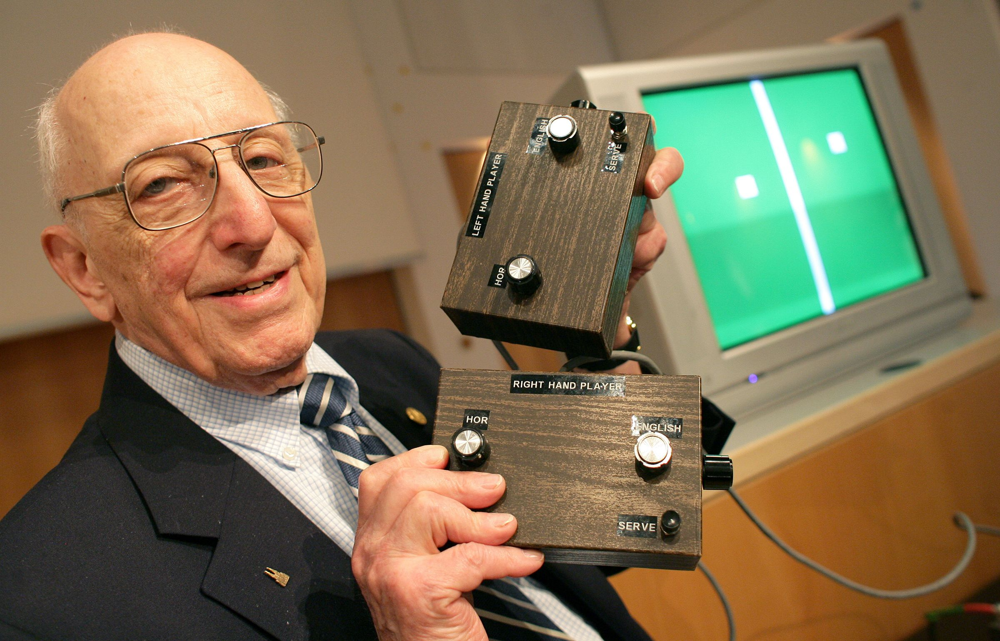
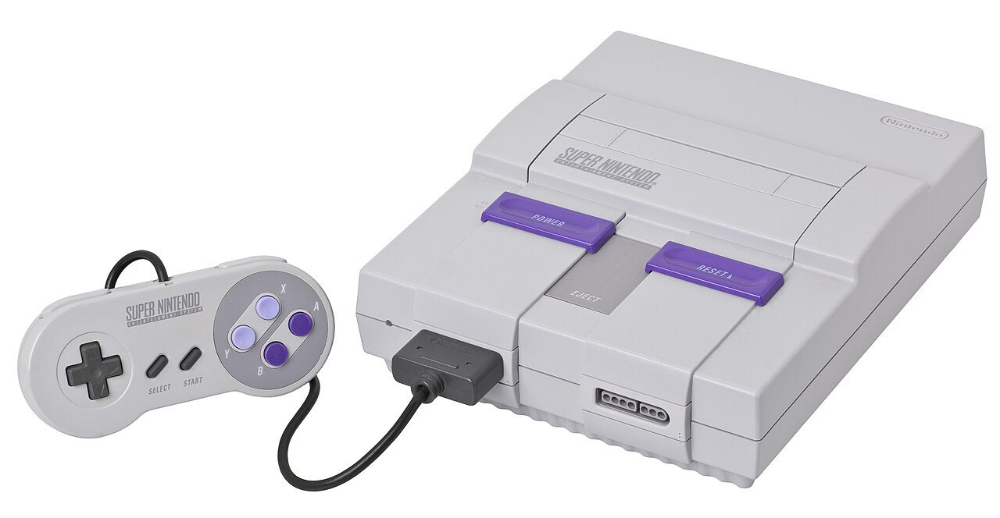
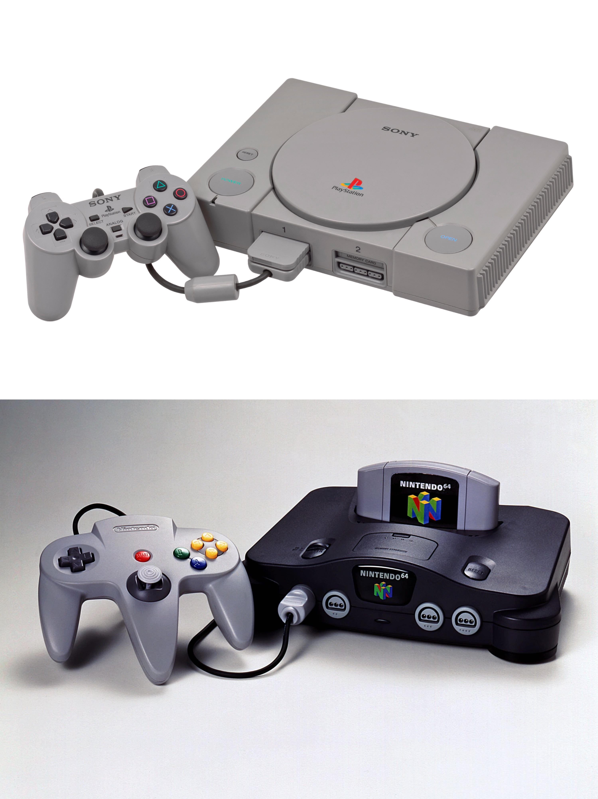
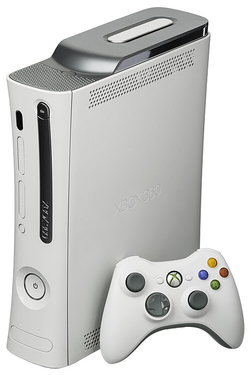
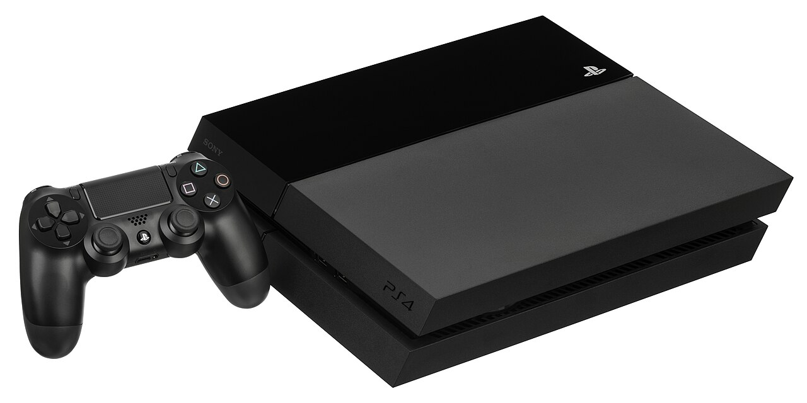
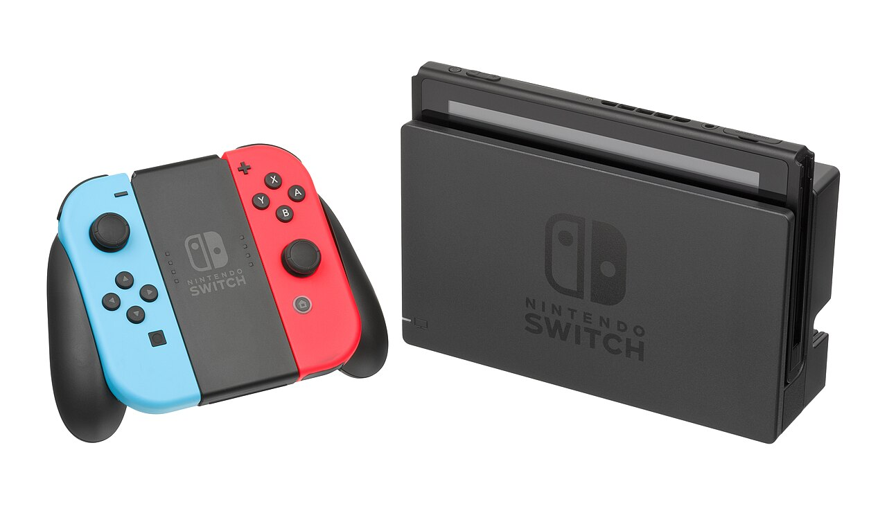

A evolução dos Videogames
Os primeiros videogames
Os videogames nasceram em ambientes acadêmicos e laboratórios. Em 1958, o físico William Higinbotham criou o Tennis for Two em um osciloscópio para entreter visitantes. Pouco depois, em 1962, estudantes do MIT desenvolveram Spacewar!, um dos primeiros jogos digitais de computador. mas o grande salto para as casas das pessoas começou no final da década de 60 com o engenheiro Ralph Baer. Conhecido hoje como o "Pai dos Videogames", Baer desenvolveu em 1967 o protótipo da "Brown Box" (Caixa Marrom). Esse aparelho permitia que as pessoas jogassem tênis de mesa e jogos de tiro diretamente em uma televisão comum, sendo a verdadeira semente que daria origem ao primeiro console comercial do mundo.

Linha do tempo
Era do 2D e Pixel Art (Anos 1970 a 1990)
Atari 2600 (Anos 1970)

Contexto da Época
Lançado em 1977 nos Estados Unidos (e mais tarde no Brasil), o Atari 2600 chegou em um momento em que os videogames eram restritos a arcades (fliperamas) ou a aparelhos que rodavam apenas um único jogo embutido (como as máquinas de Pong). A ideia de ter um sistema em casa capaz de trocar de jogo trocando apenas um cartucho de plástico parecia ficção científica para as famílias do final dos anos 1970.
Capacidade de Hardware
Processador: MOS Technology 6507 operando a incríveis 1,19 MHz.Memória RAM: Apenas 128 bytes (menos do que o texto de um único parágrafo desta resposta).Gráficos e Áudio: O chip de vídeo (TIA) não tinha memória de quadro (framebuffer). Ele desenhava a imagem linha por linha enquanto o feixe de elétrons da TV de tubo passava pela tela. Suportava resolução de aproximadamente $160 \times 192$ pixels com poucas cores simultâneas.
Impacto Cultural e de Mercado
Popularização dos Consoles Caseiros: Criou o hábito de consumir e colecionar jogos eletrônicos dentro de casa, com clássicos como Pitfall!, River Raid e Enduro.
O "Crash" de 1983: Seu sucesso esmagador gerou uma corrida predatória de empresas lançando jogos de péssima qualidade sem controle. A saturação do mercado levou ao colapso da indústria ocidental de games em 1983 — evento do qual o setor só se recuperou anos depois com o Nintendinho (NES).
NES / Nintendinho (Anos 1980)

Contexto da Época
Lançado em 1983 no Japão (Famicom) e em 1985 nos EUA (NES), surgiu no cenário pós-crise de 1983, quando o público ocidental havia perdido a confiança na indústria. A Nintendo posicionou o aparelho no Ocidente não como um videogame tradicional, mas como um "sistema de entretenimento" robótico/eletrônico para driblar o ceticismo das lojas.
Capacidade de Hardware
Processador: Ricoh 2A03 (baseado no MOS 6502) a 1,79 MHz.Memória RAM: 2 KB de RAM de sistema + 2 KB de VRAM gráfica (expansível via chips nos cartuchos).Gráficos e Áudio: Resolução de $256 \times 240$ pixels, com paleta de 54 cores (25 simultâneas) e chip de som APU com 5 canais de áudio.
Impacto Cultural e de Mercado
Salvou e reestruturou a indústria ocidental de games ao introduzir o selo de qualidade (Official Nintendo Seal of Quality) e o controle com direcional em cruz (+). Foi o berço de franquias icônicas como Super Mario Bros., The Legend of Zelda e Metroid..
Super Nintendo Entertainment System (SNES) (Anos 1990)

Contexto da Época
Lançado em 1990 no Japão e em 1991 nos EUA, chegou no auge da transição para a era dos 16-bits. A Nintendo precisava entregar uma máquina que mantivesse sua liderança global e demonstrasse um salto tecnológico expressivo em relação ao NES, apostando em rigoroso controle de qualidade e forte apoio de desenvolvedoras parceiras.
Capacidade de Hardware
Capacidade de HardwareProcessador: Ricoh 5A22 (baseado no 65C816) a 3,58 MHz.Memória RAM: 128 KB de RAM + 64 KB de VRAM + 64 KB de RAM dedicada ao áudio.Gráficos e Áudio: Resolução de $256 \times 224$ pixels (256 cores simultâneas), suporte ao gráfico pseudo-3D Mode 7 e chip de som dedicado Sony SPC700 de 8 canais.
Impacto Cultural e de Mercado
Atingiu o ápice dos gráficos 2D em pixel art e tornou-se a plataforma definitiva dos JRPGs. Consagrou clássicos como Super Mario World, The Legend of Zelda: A Link to the Past, Chrono Trigger e Donkey Kong Country, vendendo mais de 49 milhões de unidades.
Era do 3D e Polígonos (Anos 1990 a 2000)
PlayStation 1 & Nintendo 64 (Final dos Anos 1990)

Contexto da Época
A metade da década de 1990 marcou a transição histórica do 2D para os universos totalmente tridimensionais (3D). A Sony estreou com o PlayStation (1994) apostando no formato CD-ROM, enquanto o Nintendo 64 (1996) manteve o formato de cartucho para priorizar tempos de carregamento nulos.
Capacidade de Hardware
PlayStation: Processador: LSI R3000A (arquitetura MIPS RISC de 32-bits) operando a 33,86 MHz. Memória RAM: 2 MB de RAM principal + 1 MB de VRAM gráfica + 512 KB de RAM dedicada ao áudio. Gráficos e Mídia: Leitor de CD-ROM de velocidade 2x (650 MB por disco) e coprocessador gráfico GTE (Geometry Transformation Engine) capaz de processar até 360 mil polígonos por segundo. Chip de som SPU de 24 canais com qualidade de CD (44.1 kHz). Salvava dados por meio do acessório Memory Card (15 blocos de memória).
Nintendo 64:Processador: NEC VR4300 de 64-bits, operando a 93,75 MHz. Memória RAM: 4 MB de Unified RDRAM de alta velocidade, expansível para 8 MB via o acessório Expansion Pak (exigido para rodar títulos como Donkey Kong 64 e The Legend of Zelda: Majora's Mask). Gráficos e Controle: Co-processador gráfico RCP (Reality Coprocessor), oferecendo filtragem de textura e anti-aliasing em hardware. O controle introduziu o alavanca analógica de 360 graus para navegação 3D precisa, o gatilho "Z" e a porta para o Rumble Pak (pioneiro no feedback vibratório).
Impacto Cultural e de Mercado
PlayStation: Ultrapassou a marca de 102 milhões de unidades vendidas, tornando-se o primeiro console da história a quebrar a barreira dos 100 milhões. Consolidou os videogames como entretenimento para o público jovem e adulto com narrativas complexas, dublagens profissionais e estética cinematográfica. Deu origem e consagrou franquias como Final Fantasy VII, Metal Gear Solid, Resident Evil, Tekken, Silent Hill, Crash Bandicoot e Tomb Raider.
Nintendo 64: Vendeu mais de 32,9 milhões de unidades e revolucionou a linguagem do game design em três dimensões. Estabeleceu os padrões de câmera livre, movimentação espacial e travamento de mira (Z-Targeting) com Super Mario 64 e The Legend of Zelda: Ocarina of Time. Além disso, redefiniu a jogatina multiplayer presencial ao incluir 4 portas de controle nativas de fábrica, consagrando clássicos multiplayer como GoldenEye 007, Mario Kart 64, Super Smash Bros. e Banjo-Kazooie.
PlayStation 2 (Anos 2000)

Contexto da Época
Lançado no ano 2000, o PS2 chegou no momento em que o DVD substituía o VHS nas salas de estar. Ao incluir um leitor de DVD embutido por um preço competitivo em relação aos aparelhos de DVD dedicados, a Sony transformou o videogame no centro de entretenimento da família.
Capacidade de Hardware
Processador: Emotion Engine de 64-bits operando a 294,912 MHz. Memória RAM: 32 MB de Direct RDRAM + 4 MB de VRAM no chip Graphics Synthesizer. Capacidade Gráfica: Renderização teórica de até 75 milhões de polígonos por segundo, suporte a efeitos de iluminação avançados e leitor de DVD-ROM de camada dupla (até 8,5 GB por disco).
Impacto Cultural e de Mercado
Tornou-se o console mais vendido de todos os tempos, superando 155 milhões de unidades. Dominou o mercado global e definiu a cultura dos videogames no Brasil nos anos 2000, impulsionado por títulos como GTA: San Andreas, God of War, Resident Evil 4 e jogos de futebol.
Era do HD e Conectividade Online (Anos 2000 a 2010)
Xbox 360 (Anos 2000/2010)

Contexto da Época
Lançado em 2005, abriu a era da alta definição (HD) e do crescimento exponencial da internet banda larga nas residências. A Microsoft liderou a transição da jogatina local para a infraestrutura de redes online unificadas.
Capacidade de Hardware
Processador: Xenon (PowerPC de 3 núcleos a 3,2 GHz). Placa Gráfica: ATI Xenos com 512 MB de memória GDDR3 compartilhada entre CPU e GPU. Recursos de Rede: Integração com a Xbox Live, suporte a resoluções 720p/1080p, disco rígido interno para instalação de conteúdos e loja digital (Xbox Live Arcade).
Impacto Cultural e de Mercado
Consolidou o multiplayer online em consoles, popularizou o sistema de Conquistas (Achievements), o chat de voz em grupo e o mercado de jogos independentes (Indies). Marcado por franquias de grande sucesso como Halo 3, Gears of War e Forza Horizon.
PlayStation 4 (Anos 2010)

Contexto da Época
Lançado em 2013, o PS4 chegou no auge da consolidação da resolução Full HD (1080p), da expansão das lojas digitais e da integração dos consoles com redes sociais. A Sony apostou em uma arquitetura de hardware similar à de um PC para facilitar a vida dos desenvolvedores e focou em uma vasta biblioteca de títulos com narrativas profundas e imersivas.
Capacidade de Hardware
Processador: AMD Jaguar de 8 núcleos operando a 1,6 GHz. Memória e Placa Gráfica: 8 GB de RAM GDDR5 unificada e GPU AMD Radeon customizada entregando 1,84 TFLOPS. Recursos e Conectividade: Controle DualShock 4 com botão "Share" para captura e transmissões ao vivo, leitor de Blu-ray e integração nativa com a PlayStation Network..
Impacto Cultural e de Mercado
Ultrapassou a marca de 117 milhões de unidades vendidas, consolidando a liderança da Sony na oitava geração. Tornou-se referência para produções de estilo cinematográfico com exclusivos aclamados como God of War (2018), The Last of Us Part II, Horizon Zero Dawn, Uncharted 4 e Marvel's Spider-Man.
Era do 4K, SSDs e Imersão (Era Atual)
Nintendo Switch (2017)

Contexto da Época
Lançado em 2017, o Nintendo Switch unificou o mercado de consoles de mesa e portáteis. A Nintendo apostou em um conceito híbrido inovador, permitindo aos jogadores jogarem tanto conectados à TV quanto em qualquer lugar por meio do modo portátil integrável.
Capacidade de Hardware
Processador e GPU: SoC customizado Nvidia Tegra X1. Memória e Tela: 4 GB de RAM LPDDR4 e tela de 6,2 polegadas integradas (com resolução de 720p em modo portátil e saída 1080p via Dock na TV). Controles e Arquitetura: Controles removíveis Joy-Cons com giroscópio, resposta vibratória HD e leitor NFC para figuras Amiibo.
Impacto Cultural e de Mercado
Ultrapassou a marca de 140 milhões de unidades vendidas, revolucionando o hábito de jogar em qualquer lugar. Consagrou títulos que redefiniram o design de jogos de exploração e aventura, como The Legend of Zelda: Breath of the Wild, Super Mario Odyssey e Animal Crossing: New Horizons.
PlayStation 5 (2020)

Contexto da Época
Lançado em 2020, o PS5 chegou em um cenário focado na transição para resoluções 4K, taxas de quadros elevadas (até 120 fps) e eliminação das telas de carregamento. O console estabeleceu a nova referência de alta performance computacional e imersão da Sony para a nona geração.
Capacidade de Hardware
Processador e GPU: AMD Zen 2 (8 núcleos até 3.5 GHz) e GPU RDNA 2 customizada de 10.28 TFLOPS. Memória e Armazenamento: 16 GB GDDR6 compartilhados e SSD NVMe ultrarrápido customizado com taxa de transferência de 5,5 GB/s. Gráficos e Controles: Suporte a Ray Tracing em tempo real, resolução 4K e controle DualSense com resposta tátil avançada e gatilhos adaptáveis.
Impacto Cultural e de Mercado
Impacto Cultural e de Mercado Redefiniu o game design moderno ao eliminar quase por completo as telas de carregamento (loadings) e introduzir feedback físico tátil detalhado no controle. Destacou-se por entregar fidelidade gráfica próxima à cinematográfica em títulos como Demon's Souls, Ratchet & Clank: Rift Apart, God of War Ragnarök e Marvel's Spider-Man 2.
Mais do que diversão, os videogames são uma forma de arte: unem imagem, música, narrativa e interação para contar histórias que só podem ser vividas jogando.